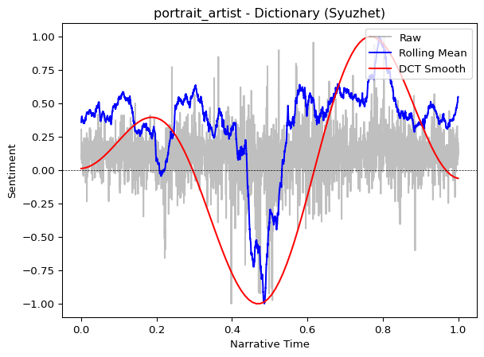
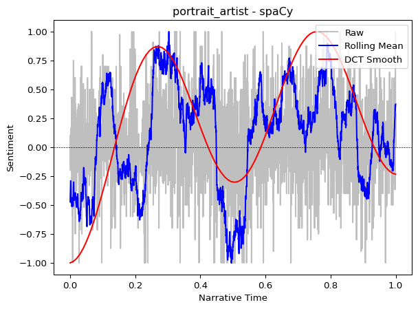

from moodswing import SpaCySentimentAnalyzer
import time
# Initialize the analyzer (this loads the spaCy model)
analyzer = SpaCySentimentAnalyzer(model="en_core_web_sm")Using spaCy for sentiment
spaCy is a modern natural language processing (NLP) library that can analyze text using neural networks. Unlike dictionary-based approaches that simply look up word scores, spaCy processes sentences with machine learning models that understand context, grammar, and word relationships.
Dictionary vs. spaCy: Key differences
| Aspect | Dictionary (Lexicons) | spaCy (Neural Models) |
|---|---|---|
| Method | Look up pre-assigned word scores | Neural network predictions |
| Context awareness | None (each word scored independently) | Yes (understands word relationships) |
| Speed | Very fast (milliseconds) | Slower (seconds to minutes) |
| Setup | No installation needed | Requires downloading language models |
| Negation handling | Poor (“not happy” = neutral or positive) | Good (recognizes negation) |
| Domain adaptation | Limited to lexicon coverage | Can train custom models |
When to use spaCy
Use spaCy when: - You need context-aware sentiment (recognizing “not good” as negative) - Working with complex sentences where word order matters - You have access to a custom trained model for your domain - Accuracy is more important than speed
Use dictionaries when: - You need fast processing of large corpora - Working with straightforward narrative text - You want transparent, explainable results - Processing time is limited (thousands of documents)
Setting up spaCy
The moodswing package already includes spaCy and spacytextblob as dependencies, so they’re installed automatically. You just need to download a language model:
python -m spacy download en_core_web_smThe en_core_web_sm model is small and fast. For better accuracy, you can use larger models like en_core_web_md or en_core_web_lg, though they will be slower.
Basic usage
# Analyze a simple passage
text = """
The party was wonderful. Everyone had a great time.
But the cleanup was terrible and exhausting.
We won't make that mistake again.
"""
# Get sentiment scores
scores = analyzer.text_scores(text)
print(f"Sentence scores: {scores}")
print(f"Average sentiment: {sum(scores)/len(scores):.3f}")Sentence scores: [1.0, 0.8, -0.7, 0.0]
Average sentiment: 0.275Understanding spaCy sentiment scores
By default, moodswing uses spacytextblob to generate sentiment scores. These range from -1.0 (most negative) to +1.0 (most positive), similar to the dictionary methods.
Let’s see how spaCy handles context that dictionaries miss:
from moodswing import DictionarySentimentAnalyzer
# Create both analyzers for comparison
spacy_analyzer = SpaCySentimentAnalyzer(model="en_core_web_sm")
dict_analyzer = DictionarySentimentAnalyzer()
# Test sentences where context matters
test_sentences = [
"The movie was good.",
"The movie was not good.",
"The movie was not bad.",
"I don't hate this.",
]
print("Dictionary vs. spaCy on context-dependent sentences:\n")
for sentence in test_sentences:
dict_score = dict_analyzer.sentence_scores([sentence], method="syuzhet")[0]
spacy_score = spacy_analyzer.sentence_scores([sentence])[0]
print(f"'{sentence}'")
print(f" Dictionary: {dict_score:+.3f}")
print(f" spaCy: {spacy_score:+.3f}\n")Dictionary vs. spaCy on context-dependent sentences:
'The movie was good.'
Dictionary: +0.750
spaCy: +0.700
'The movie was not good.'
Dictionary: +0.750
spaCy: -0.350
'The movie was not bad.'
Dictionary: -0.750
spaCy: +0.350
'I don't hate this.'
Dictionary: -0.750
spaCy: -0.800
Notice how spaCy better handles negation (“not good” is negative, “not bad” is somewhat positive), while dictionaries often miss these contextual cues.
Processing time comparison
Let’s measure how long each method takes on a real novel:
from moodswing.data import load_sample_text
from moodswing import Sentencizer
# Load a sample novel
doc_id, text = load_sample_text("portrait_artist")
print(f"Analyzing: {doc_id}")
# Split into sentences once
sentencizer = Sentencizer()
sentences = sentencizer.split(text)
print(f"Total sentences: {len(sentences)}")Analyzing: portrait_artist
Total sentences: 5372# Time dictionary-based analysis
start = time.time()
dict_scores = dict_analyzer.sentence_scores(sentences, method="syuzhet")
dict_time = time.time() - start
print(f"\nDictionary (Syuzhet) analysis:")
print(f" Time: {dict_time:.2f} seconds")
print(f" Speed: {len(sentences)/dict_time:.0f} sentences/second")
Dictionary (Syuzhet) analysis:
Time: 0.33 seconds
Speed: 16448 sentences/second# Time spaCy analysis
start = time.time()
spacy_scores = spacy_analyzer.sentence_scores(sentences)
spacy_time = time.time() - start
print(f"\nspaCy analysis:")
print(f" Time: {spacy_time:.2f} seconds")
print(f" Speed: {len(sentences)/spacy_time:.0f} sentences/second")
print(f"\nspaCy is {spacy_time/dict_time:.1f}x slower than dictionary")
spaCy analysis:
Time: 15.38 seconds
Speed: 349 sentences/second
spaCy is 47.1x slower than dictionary
Processing time considerations
For a typical novel (~3,000-5,000 sentences), dictionary methods complete in seconds, while spaCy can take minutes. When processing dozens or hundreds of texts, this difference becomes significant. Plan accordingly or consider using dictionaries for initial exploration, then spaCy for closer analysis of selected texts.
Comparing trajectories
Do the two methods produce similar narrative arcs? Let’s plot both:
from moodswing import prepare_trajectory, plot_trajectory, DCTTransform
# Prepare trajectories with identical smoothing
trajectory_dict = prepare_trajectory(
dict_scores,
rolling_window=int(len(dict_scores) * 0.05),
dct_transform=DCTTransform(low_pass_size=5, output_length=100, scale_range=True)
)
trajectory_spacy = prepare_trajectory(
spacy_scores,
rolling_window=int(len(spacy_scores) * 0.05),
dct_transform=DCTTransform(low_pass_size=5, output_length=100, scale_range=True)
)plot_trajectory(trajectory_dict, title=f"{doc_id} - Dictionary (Syuzhet)")
plot_trajectory(trajectory_spacy, title=f"{doc_id} - spaCy")
Both methods typically reveal similar overall narrative shapes, though spaCy’s scores may be more nuanced. For literary analysis focused on broad narrative structure, dictionaries often suffice.
Using custom spaCy models
If you’ve trained a custom text classifier with spaCy (for example, a model fine-tuned on historical novels or social media), you can use it directly:
# Example: Using a custom trained model
custom_analyzer = SpaCySentimentAnalyzer(
model="path/to/your/custom_model",
positive_label="POSITIVE", # Match your training labels
negative_label="NEGATIVE"
)
scores = custom_analyzer.text_scores(text)The analyzer automatically detects sentiment from: 1. TextBlob polarity (if spacytextblob is available) 2. Custom doc.cats scores (from textcat models) 3. doc.sentiment attributes (if present)
You can also provide your own scoring function:
def custom_scorer(doc):
# Your custom logic here
# Return a float between -1 and 1
return some_calculation(doc)
analyzer = SpaCySentimentAnalyzer(
model="en_core_web_sm",
scorer=custom_scorer
)Batch processing for efficiency
When analyzing multiple texts with spaCy, process them together to take advantage of batching:
# Less efficient: analyzing one at a time
# for text in texts:
# scores = analyzer.text_scores(text)
# More efficient: process a batch
from moodswing.data import iter_sample_texts
# Get multiple texts
texts = list(iter_sample_texts())
print(f"Processing {len(texts)} texts...")
# The analyzer automatically uses spaCy's efficient .pipe() internally
start = time.time()
all_scores = [analyzer.text_scores(text) for doc_id, text in texts[:3]] # Just first 3 for demo
batch_time = time.time() - start
print(f"Processed {len(all_scores)} texts in {batch_time:.2f} seconds")Processing 4 texts...
Processed 3 texts in 87.63 secondsChoosing between methods: A decision tree
Are you analyzing 100+ documents?
├─ YES → Use dictionaries (much faster)
└─ NO
└─ Does context matter (negation, irony, complex syntax)?
├─ YES → Consider spaCy
└─ NO → Use dictionaries (simpler, transparent)
└─ Do you have a domain-specific trained model?
├─ YES → Use spaCy with custom model
└─ NO → Stick with dictionariesBest practices
For exploratory analysis: 1. Start with dictionary methods (fast iteration) 2. Identify interesting texts or sections 3. Apply spaCy to those specific areas for detailed analysis
For production pipelines: 1. If processing <100 texts: spaCy is feasible 2. If processing 100-1000 texts: dictionaries recommended 3. If processing 1000+ texts: definitely use dictionaries or consider cloud GPU resources for spaCy
For publication: - Document which method you used and why - Consider reporting both methods to show robustness - If using spaCy, specify the exact model version used
Hybrid approach
You don’t have to choose just one method! Use dictionaries for initial exploration and large-scale processing, then apply spaCy to specific passages where context sensitivity matters—like dialogue, ironic passages, or climactic scenes where nuance is critical.
Next steps
- Review technical notes for implementation details
- Explore sentiment lexicons for dictionary-based alternatives
- Check the API reference for
SpaCySentimentAnalyzerparameters